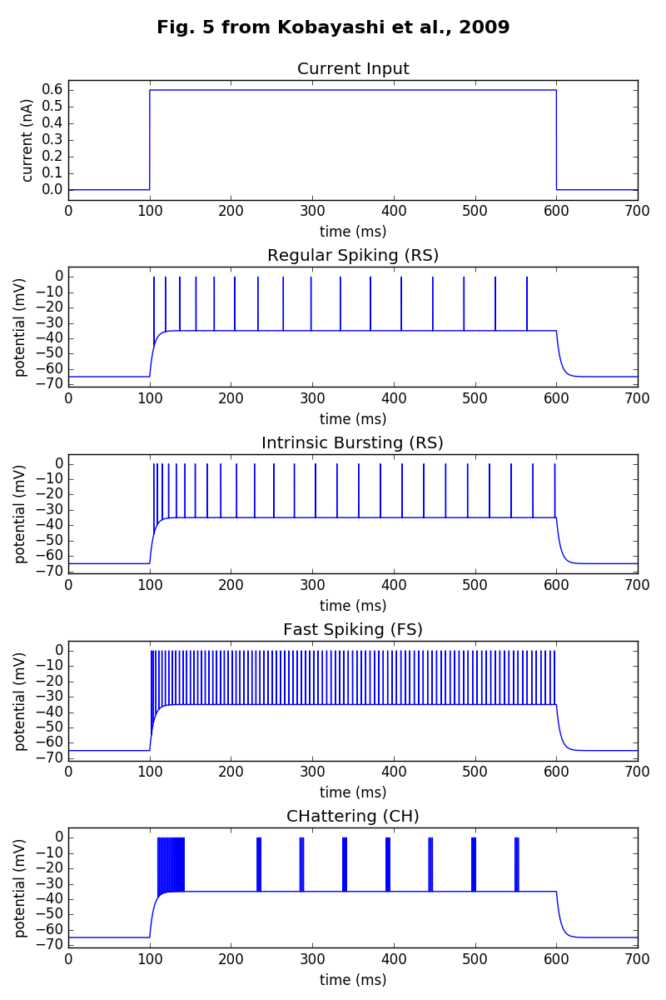
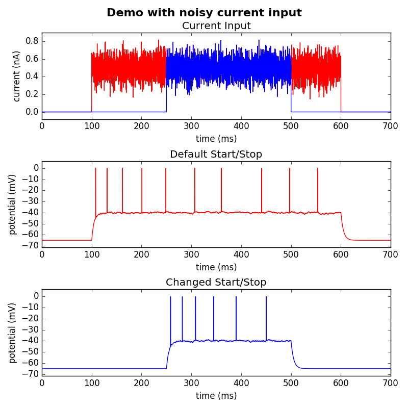

================================================================== ***** Multi-Timescale Adaptive Threshold (MAT) Model ***** ------------------------------------------------------------------ Kobayashi, R., Tsubo, Y., & Shinomoto, S. (2009). Made-to-order spiking neuron model equipped with a multi-timescale adaptive threshold. Frontiers in computational neuroscience, 3, 9. http://journal.frontiersin.org/article/10.3389/neuro.10.009.2009/full Note: The implementation has been kept consistent with the Matlab version found at: http://research.nii.ac.jp/~r-koba/applications/pred.html This NEURON implementation was contributed by Shailesh Appukuttan ================================================================== This is a NEURON implementation (using Python) of the MAT model published by Kobayashi et al. (2009). Fig. 5B from the article has been reproduced. This illustrates the operation of the model for different firing patterns. The files included here are: 1) MAT_model.mod - the NMODL file for the MAT model; default parameters are set for regular spiking (RS) 2) MAT_Neuron_StepCurrent.py - this file reproduces Fig. 5B from the article 3) fig_5.png - Fig. 5B from the article reproduced using MAT_Neuron_StepCurrent.py  4) MAT_Neuron_VaryCurrent.py - demo showing input of an arbitrary current to the model 5) noisyCurrent.png - sample output from MAT_Neuron_VaryCurrent.py  ================================================================== Implemented by: Shailesh Appukuttan Email: shailesh.appukuttan at unic.cnrs-gif.fr / appukuttan.shailesh at gmail.com Please inform me if you find any inconsistency in the model implementation. I shall try to resolve the same. ==================================================================